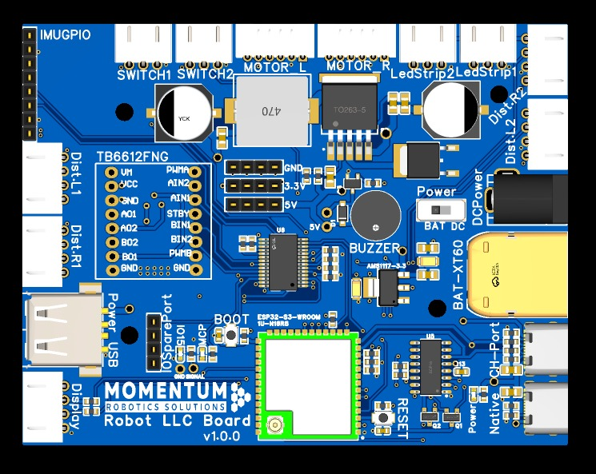

Hardware Overview
Overview
This section describes the complete hardware architecture of Titan Robot, including its mechanical structure, compute units, sensors, electronics, and power system.
Hardware Architecture
Titan Robot follows a layered hardware design:
- Compute Layer – Runs high-level ROS 2 software
- Control Layer – Handles real-time motor control and odometry
- Sensor Layer – Provides perception and environment awareness
- Power Layer – Supplies regulated power to all subsystems
Each layer is designed to be independent and modular.
Mechanical Design

Chassis
- Differential-drive mobile base
- Rigid frame with mounting points for:
- Compute unit
- Battery
- Motor controller
- Sensors
- Passive caster wheel for balance
- Compact footprint for indoor navigation
Drive System
- Two DC gear motors
- Quadrature wheel encoders
- Rubber wheels for traction
- Encoder feedback used for odometry and closed-loop control
Compute Unit
Main Controller

- Raspberry Pi 4B (8GB RAM)
- Runs Ubuntu 22.04 LTS
- Hosts all ROS 2 nodes
- Handles:
- SLAM and localization
- Navigation and planning
- Perception pipelines
- User interfaces and visualization
Connectivity
- USB interfaces for sensors and microcontroller
- WiFi and Ethernet for remote access
- GPIO headers for expansion
Control Electronics
Motor Controller (Custom Momentum Robotics Compute Board)

- Custom Momentum Robotics Compute board based on ESP32 S3
- Purpose-built for low-level motor control and real-time operations
- ESP32 S3 MCU for real-time control
- Responsibilities:
- Motor PWM control
- PID velocity control
- Encoder reading
- Odometry computation
- Communicates with the compute unit via serial interface
- Publishes odometry and receives velocity commands through ROS 2
Sensor Suite
2D LIDAR

- 360° scanning range
- Used for:
- Mapping (SLAM)
- Localization
- Obstacle detection
- Publishes laser scan data to ROS 2
Camera Systems
The camera configuration depends on the robot variant:
Variant V1
- No camera
- Navigation relies solely on LIDAR and odometry
Variant V2

- Raspberry Pi Camera
- Used for:
- Object detection
- Vision-based perception
- Image processing pipelines
Variant V3

- Intel RealSense depth camera
- Provides:
- RGB images
- Depth data
- 3D perception capabilities
Power System
Battery
- 11.1V 2500mAh NMC (Lithium Nickel Manganese Cobalt Oxide)
- Rechargeable lithium-based battery
- Provides sufficient capacity for extended operation
- Mounted securely within the chassis
Power Distribution
- Main battery output distributed to:
- Motor driver circuitry
- Compute unit via voltage regulator
- Sensors and peripherals
- Separate regulated rails to ensure stable operation
Voltage Regulation
- Step-down regulators used to supply:
- 5V for compute unit and logic
- Motor voltage as required by motors
- Designed to handle peak current during motor startup
Power Management & Safety
- Power switch for safe startup and shutdown
- Inline protection (fuse or current limiter)
- Reverse polarity and overcurrent protection
Charging System
- Dedicated charging port
- Charging circuit includes:
- Overvoltage protection
- Overcurrent protection
- Thermal safety mechanisms
Expansion & Customization
Titan Robot is designed for extensibility:
- USB ports for additional sensors
- GPIO access for custom electronics
- Mounting space for:
- Extra sensors
- Displays
- External controllers
This makes the platform suitable for both educational use and advanced research.
You now have a complete overview of Titan Robot’s hardware platform 🚀